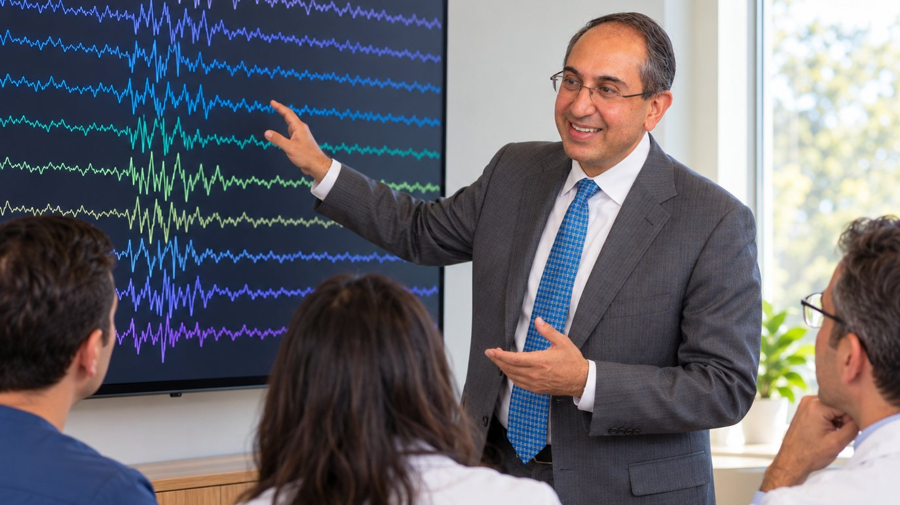
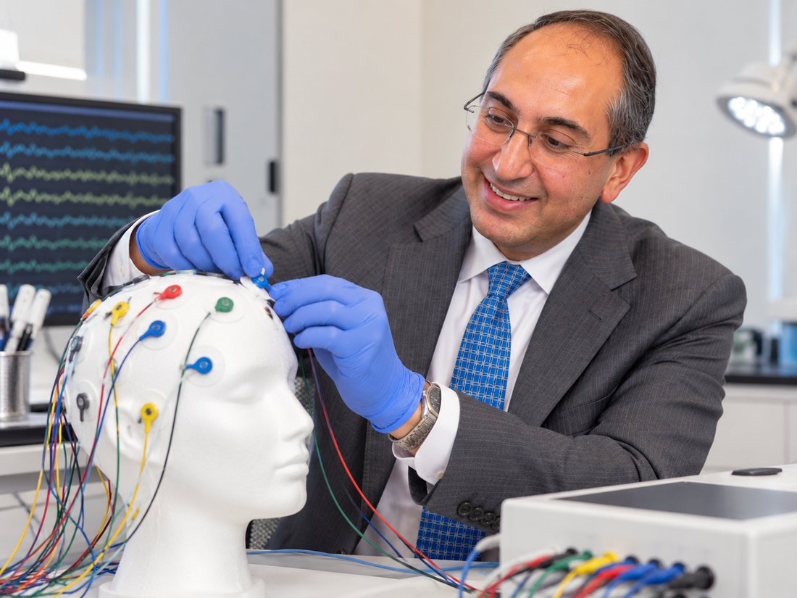
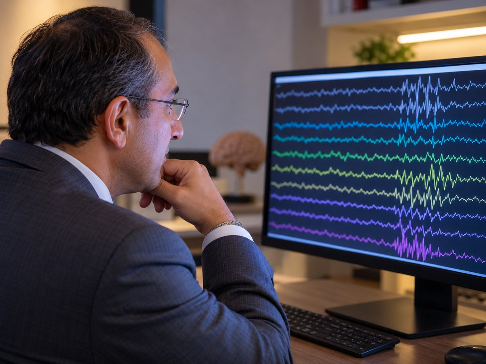

Neurology and epilepsy · Marlboro Township, New Jersey
Amor R. Mehta, MD Neurologist and epileptologist. Dual certified by the American Board of Psychiatry and Neurology, in neurology and in epilepsy. Founder of the Neurology Center for Epilepsy and Seizures.
The Neurology Center for Epilepsy and Seizures, Marlboro Township, New Jersey.
The practice
A center built around one condition
Dr. Mehta founded the Neurology Center for Epilepsy and Seizures in 2018.
The practice is organized on what he calls an Epilepsy Medical Home model: comprehensive, multidisciplinary care held in one place, so that the diagnosis, the medication, the monitoring and the follow up are not scattered across separate offices.
Before founding the center he was a partner at the Institute of Neurology and Neurosurgery at Saint Barnabas, and the founding director of the adult and pediatric epilepsy monitoring unit at Community Medical Center in Toms River.
His training runs through both halves of the work. General neurology residency at NYU School of Medicine, then an epilepsy fellowship, then a clinical neurophysiology fellowship on the EEG track. The reading of the trace and the care of the patient are the same job to him.
He is dual certified by the American Board of Psychiatry and Neurology, in neurology and in epilepsy.
Clinical focus
What he treats
- EpilepsyEarly diagnosis and treatment, including the cases that have gone unrecognized or under treated for years.
- Complex migraineHeadache disorders that overlap with, or are mistaken for, seizure activity.
- Post COVID neurological complicationsThe neurological presentations that followed COVID-19 infection.
- Alzheimer's disease and cognitive disordersMemory and cognitive decline, including dementia.
Comprehensive multidisciplinary epilepsy care, held together in one place instead of handed between offices.
The Epilepsy Medical Home model
Training and record
The long version
- Undergraduate
- Northwestern UniversityBachelor of Science, neurosciences.
- Medical school
- New York Medical CollegeDoctor of Medicine, 2007.
- Internship
- Rutgers School of Biomedical and Health SciencesInternal medicine and neurology.
- Residency
- NYU School of MedicineGeneral neurology.
- Fellowships
- NYU School of MedicineEpilepsy, then clinical neurophysiology on the EEG track.
- Certification
- American Board of Psychiatry and NeurologyDual certified: neurology, and epilepsy.
- Earlier posts
- Institute of Neurology and Neurosurgery at Saint BarnabasPartner. Also founding director of the adult and pediatric epilepsy monitoring unit at Community Medical Center, Toms River.
- Now
- Neurology Center for Epilepsy and SeizuresFounder, 2018. Marlboro Township, New Jersey.
- American Epilepsy Society
- American Academy of Neurology
- American Clinical Neurophysiology Society
- American Medical Association
Gallery
The center, and the work in it



Contact
Getting in touch
Neurology Center for Epilepsy and Seizures
Marlboro Township, New Jersey.
New patient enquiries, appointments and referrals are handled by the practice.
Visit the practice siteDr. Mehta sees patients for epilepsy and seizure disorders, complex migraine, post COVID neurological presentations, and memory and cognitive decline.
Referring physicians are welcome to contact the practice directly.